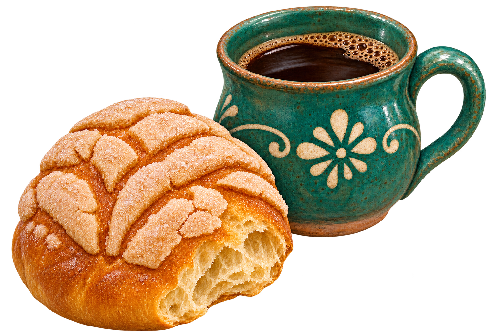
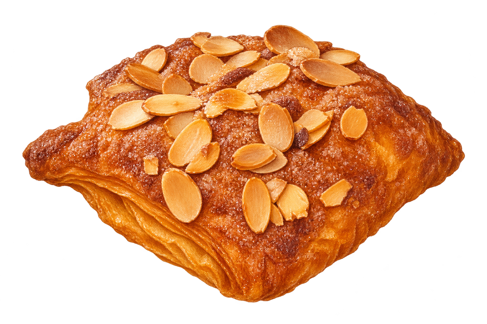

Propuesta de ilustración genérica para un momento de sabores: pan y taza de café. No es fotografía de una visita, producto consumido ni vajilla de un establecimiento. Recurso generado con image_gen y conservado con su procedencia.


La muestra sólo comprueba el recorte estático. Escala, posición y oportunidad se eligen sobre la toma, sin ocultar manos, producto ni reacción. Importación y animación en Clipo pendientes. Los diseños de papel de v02 se conservan como antecedente descartado para esta dirección.
Volver al design system →